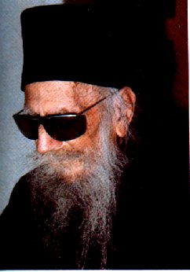

π. Δοσίθεος Παρασκευαΐδης Κατουνακιώτης / Fr. Dositheos Paraskevaidis Katounakiotis
Ο τυφλός Αγιορείτης ψάλτης / The blind Athonite master of Byzantine Chant

Fr. Dositheos (click for original size)
Βιογραφικά /Biographical
Γεννήθηκε το 1912 στην Αττάλεια της Μ. Ασίας. Έχασε το φώς του σε ηλικία 5 ετών.
Το 1931 (19 ετών) έγινε μοναχός στο Αγ. Όρος. Επινόησε σύστημα Μπρέιγ για τη Βυζαντινή
μουσική και μετέγραφε σε αυτό όλα τα κλασσικά μαθήματα. Συνέθεσε και νέα μέλη βασιζόμενος
σε κλασσικές γραμμές και θέσεις. Τα τελευταία χρόνια της ζωής του τα πέρασε στο
μοναστήρι των Αγ. Κυπριανού και Ιουστίνης Φυλής, όπου δίδαξε και ηχογράφησε αρκετά
μέλη σε ηλικία 50-55 ετών. Απο πληροφορίες μαθητών του, ο π. Δοσίθεος θαύμαζε και
ακολουθούσε τον τρόπο εκτέλεσης του Ιακώβου Ναυπλιώτη. Κοιμήθηκε την Παρασκευή της
εβδομάδος των Βαΐων το 1991 σε ηλικία 79 ετών. Κάποιες ηχογραφήσεις και συνθέσεις
του έχουν δημοσιευτεί από το μοναστήρι των Αγ. Κυπριανού και Ιουστίνης η διέυθυνση
του οποίου είναι: Ταχ. θυρίδα 46 006, Ταχ. κωδικός 133 10, Άνω Λιόσια, Φυλή Αττικής,
Ελλάδα, Τηλ. +30 210 2411380.
Biographical notes by Georgios K. Michalakis
He was born in 1912 at Attaleia in Asia Minor. He lost his sight at 5 years of age,
but was endowed with rare musical gifts. In 1931 (at the age of 19) he became a
monk at Mount Athos. He invented a Braille system for Byzantine music, and used
it to transcribe all the classical pieces. The melodic lines of his personal compositions
were always based upon those of the great teachers, and the overall hymns combined
art with prayer. With all due respect to the classical texts and methods of composition,
he also opened the path of musical freedom within the domain of Psaltic art (ecclesiastical
chant). His compositions and performances of all the classical pieces, recorded
on magnetic tapes, constitute a precious treasure for researchers, specialists (and
students) of Ecclesiastical Byzantine Music. He reposed in the Lord on Friday of
Palm Week in 1991 at the age of 79.
In the vocal introduction by the right choir monk chanter, one is informed that
Monk Dositheos chanted all these hymns without any isson (which was added years
later by the monk chanters), at the age of 50 to 55. He had particular admiration
for the works of Iakovos Protopsaltis (whose two volume work he had also transcribed
in the special Byzantine Music Neumatic Braille he had developed). He left behind
about 100 hours' worth of chanting. He'd use classical patriarchal editions (with
the Patriarchal stamp). He also transcribed many developements of various musical
formulae, which he has organised in systematic manner.
The information here, was partly obtained from the chant master in charge of the
distribution of monk Dostheos' work at the
Monastery of Saints Cyprian
and Justina, Postal Box 46 006, Postal code 133 10, Ano Liosia, Fili,
Attica, Greece, Tel: (+1 210) and then 24 11 380, Fax: 24 11 080.
Other information here is from another long - time student of monk Dositheos, monk
Father Chrysostom, with whom Georgios chanted for almost 2 years, as right chanter,
in Montreal. Monk Dositheos spent the last years of his life in the monastery cited
above, and bestowed upon them this inestimable treasure. Monk Dositheos also had
very particular admiration for Iakovos Nafpliotis, and this above all other chanters.
He would dictate the neumes by heart to his students and would do parallagi likewise.
The students would transcribe this diction, and then do Parallagi (again, by heart
as far as Monk Dositheos is concerned). Father Chrysostom left me his notes and
exercises as well as some old classical editions he'd study with monk Dositheos.
Father Chrysostom reposed in Christ after succombing to a rare, quick, and devastating
heart cancer (rhabdomyosarcoma).
Βιβλία / Books
The following books by Dositheos were published by the Cyprianite brotherhood:
1) Λειτουργικά / Leitourgika
2) Οκτάηχο Εβδομαδάριον / Oktaechon Ebdomarion
3) Παραλειπόμενα Τριωδίου / Paraleipomena Triodiou
4) Μουσικόν Τριώδιον / Mousikon Triodion
Ψηφιακός δίσκος με ύμνους Πρώτου και Δεύτερου ήχου / CD with hymns of First and
Second mode chanted by Fr Dositheos, (click for original size)
Ηχογραφήσεις / Recordings
Ο π. Δοσίθεος ηχογράφησε όλα τα κλασσικά μαθήματα, από Ιάκωβο πρωτοψάλτη μέχρι τα
αργά ανοιξαντάρια του Κουκουζέλη. Λίγα από αυτά έχουν εκδοθεί σε κασέτα από το μοναστήρι.
Η κασέτα Νο 10 του μοναστηριού περιλαμβάνει μέλη από τον π. Δοσίθεο.
Dositheos recorded all the classical pieces ranging from slow Kekragaria and Pasapnoaria
of Iakovos Protopsaltis to slow Anoixantaria by St. Ioannis Koukouzelis. Part of
these are available on tapes and CDs published by St. Cyprian's monastery. Tape
Number 1 of monk Dositheos (Number 10 in the recording series of the aforementionned
monastery), includes the following hymns (samples offered by Georgios Michalakis):
Πλευρά Α / Side A
1) Κεκραγάρια Πλ β΄ ήχου, Ιακώβου Πρωτοψάλτου / Kekragarion and Katefthinthito,
Iakovos Protopsaltis, Plagal Second Mode 2) Απόστιχα Πλ. β' ήχου, Ιωάννου Πρωτοψάλτου
/ Αposticha from Ioannis Protopsaltis' Anastasimatation, Plagal Second Mode [
mp3, 1.1 Mb] (sample)
3) Ότι Σωτήρα Έτεκες, Πέτρου Μπερεκέτου / Oti Sotira, from the Octaechon Theotoke
Parthene, Bereketis, Barys Mode [
mp3, 761 Kb] (sample)
4) Πρώτο Εωθινό, προσωπική σύνθεση, Πρώτος ήχος / First Eothinon, personal composition,
First Mode
5) Την ωραιότητα (αργόν), γ΄ήχος / Tin oraiotita, Slow version, Third Mode
Πλευρά Β / Side B
1) Πολυέλεος "Δούλοι Κύριον", ήχος Πρώτος / Polyeleos, Douloi Kyrion, Petros Peloponnesios,
including the perissi "Pantanassa Panymnite", Plagal First Mode. Here are some sample
verses:
Τα είδωλα των εθνών / Ta Eidola Ton Ethnon [
mp3, 700 Kb]
Στόμα έχουσιν / Stoma Exousin [
mp3, 400 Kb]
Οφθαλμούς έχουσιν / Ofthalmous Exousin [
mp3, 400 Kb]
2) Δοξολογία, ήχος Πλάγιος του Δευτέρου, Ιακώβου Πρωτοψάλτου / Great Doxology, Iakovos
Protopsaltis, Plagal Second Mode.
Άλλες ηχογραφήσεις / Other recordings
Από ραδιοφωνικές εκπομπές του Λ. Αγγελόπουλου, Κ. Αγγελίδη και Γ. Κυριακάκη / The
following recordings were broadcasted on radio by Lykourgos Angelopoulos, Georgios
Kyriakakis and Konstantinos Angelidis
Δοξαστικόν Αθωνιτών Πατέρων, ήχος Πλάγιος του Τετάρτου / Ton Osion Pateron, Doxastikon
of Athonite Fathers, Plagal Fourth Mode [
mp3, 1.7 Mb]
Ήδη Βάπτεται Κάλαμος, ήχος Πλάγιος του Τετάρτου, Ιακώβου Πρωτοψάλτου / Idi Vaptetai
Kalamos, by Iakovos Protopsaltis, Plagal Fourth Mode [
mp3, 2.8 Mb]
Άνωθεν οι Προφήται, μάθημα, ήχος Βαρύς / Anothen oi Profitai, Mathema chanted during
the vesting of the Bishop [
mp3, 3.87 Mb]
Δοξαστικόν Αγ. Σπυρίδωνος, Ιακώβου Πρωτοψάλτου / Doxastikon of St. Spyridon by Iakovos
Protopsaltis [
mp3, 2.5 Mb]
Δοξαστικόν Αγ. Πατέρων, Ιακώβου Πρωτοψάλτου / Ton Agion Pateron, Doxastikon of the
Holy Fathers, by Iakovos Protopsaltis, Plagal Fourth Mode [
mp3, 2.7 Mb]
Από ραδιοφωνικές εκπομπές του Γεωργίου Κωνσταντίνου / The following recordings were
broadcasted on radio by Georgios Konstantinou.
Κεκραγάριο β' ήχου, Ιακώβου Πρωτοψάλτου / Kyrie ekekraxa by Iakovos Protopsaltis
Second Mode [
mp3, 3.5 Mb]
Φώς Ιλαρόν, αρχαίον, ήχος ΄β' / Phos hilaron, ancient melody, Second Mode [
mp3, 4.3 Mb]
Από ραδιοφωνικές εκπομπές (συλλογή Shota Gugushvili) / The following recordings
were offered by Shota Gugushvili
Στιχηρό β' ήχου, "Συν αρχαγγέλοις υμνήσωμεν" / Syn archangelis ymnisomen, Second
Mode [
wma, 277 Kb]
Κεκραγάρια γ' ήχου / Kekragaria Third Mode [
wma, 990 Kb]
Απόστιχα δ' ήχου / Kekragaria (Aposticha) Fourth Mode [
wma, 1.3 Mb]
Ιδιόμελον "Έλαμψεν η χάρις", δ΄ήχου, Ιακώβου Πρωτοψάλτου / Elampsen i xaris, Idiomelon
by Iakovos Protopsaltis, Fourth Mode Sticheraric [
mp3, 2.5 Mb]
{kind=link}
{kind=link}